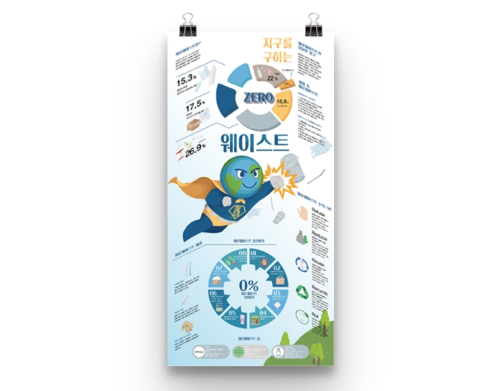

Project Name
지구를 구하는 ZERO WASTE
인포그래픽
Overview
쓰레기로부터 발생하는 환경문제의 심각성을 알리고, 제로 웨이스트의필요성과 생활 속 실천 방법을 제시한 인포그래픽
사용 프로그램
- Illustlator

Project Name
인포그래픽
Overview
쓰레기로부터 발생하는 환경문제의 심각성을 알리고, 제로 웨이스트의필요성과 생활 속 실천 방법을 제시한 인포그래픽
사용 프로그램